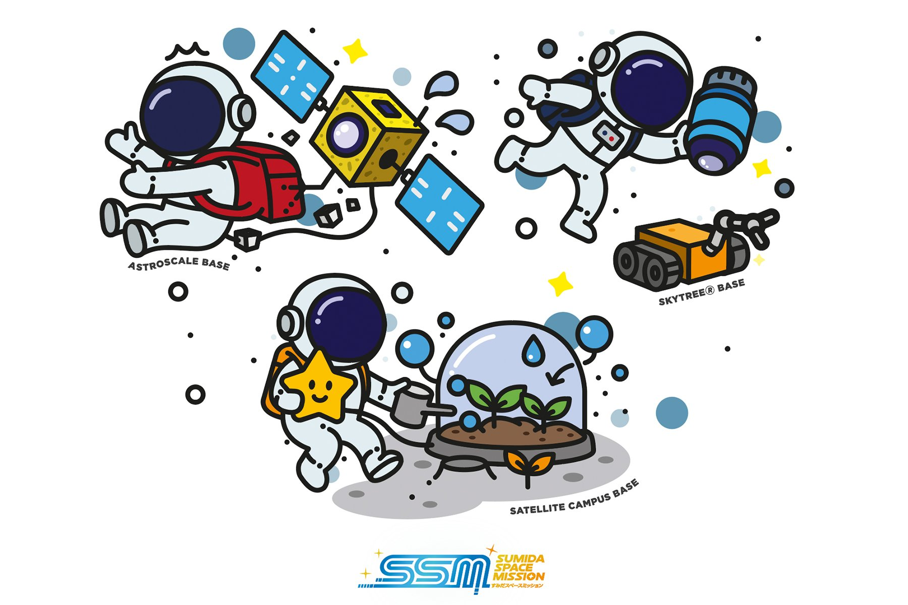
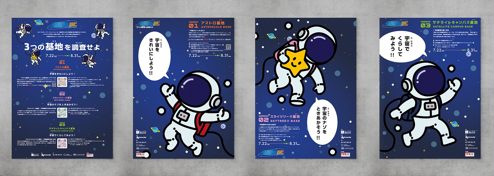
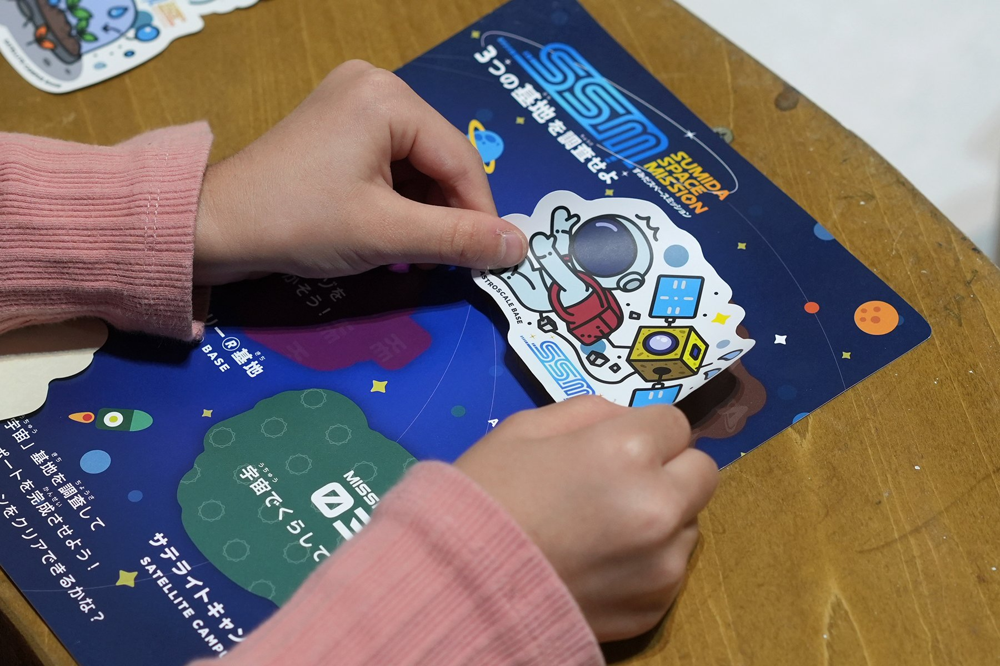
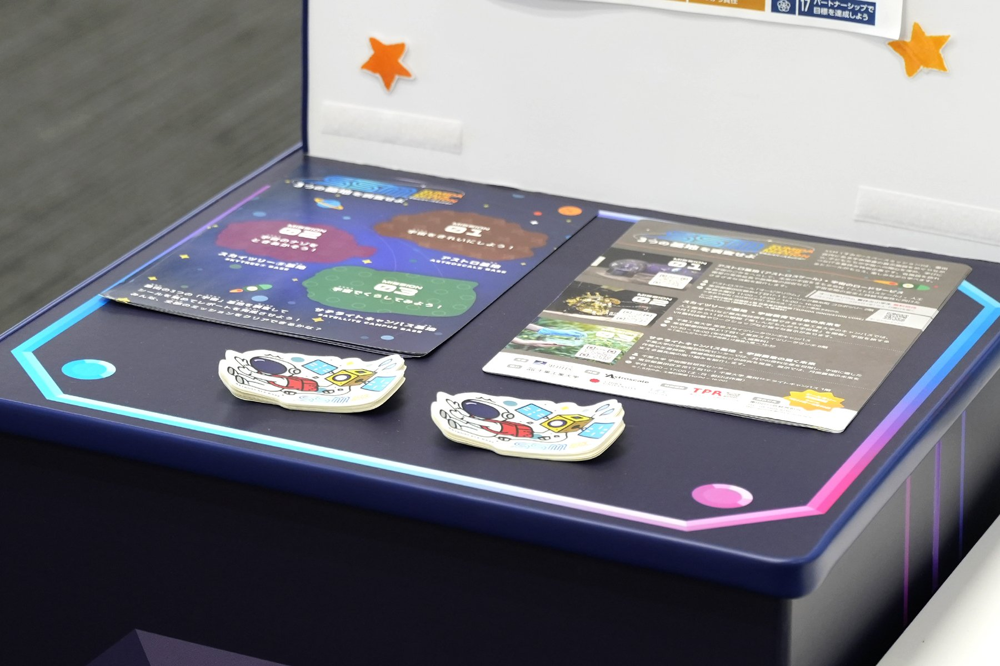
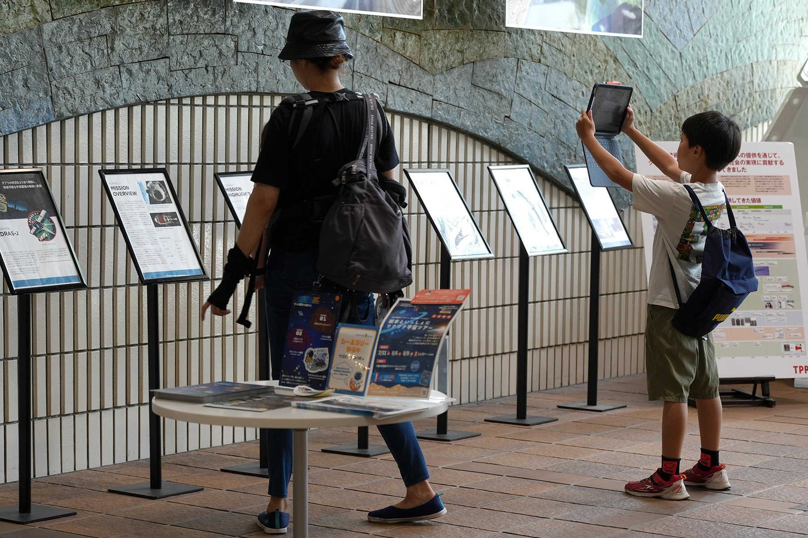

千葉大学 デザインコース コミュニケーションデザイン研究室
Chiba University, Design Course — Communication Design Lab.
2025
PUBLIC DESIGN CHARACTER / ILLUSTRATION
すみだスペースミッション
3つの基地を調査せよ
Sumida Space Mission

Overview
プロジェクトについて
About the project
小学生をはじめとする子どもたちが、宇宙や宇宙産業を楽しく学べる、墨田区の夏のイベント「すみだスペースミッション」。区内の3か所――アストロスケール、千葉工業大学 東京スカイツリータウン®キャンパス、千葉大学 墨田サテライトキャンパス（宇宙園芸研究センター）――を「基地」に見立て、2025年7月22日から8月30日まで、シールを集めてめぐるラリーとしてつなぎました。3つの組織がそれぞれ持つコンテンツを、宇宙飛行士のキャラクターと「3つの基地を調査せよ」というミッション形式のストーリーでひとつのイベントにまとめ、ポスター、リーフレット、シールなどへ展開しています。難しくなりがちな宇宙の話題を親しみやすく伝え、地域のイノベーションや産業への関心も高めます。
Sumida Space Mission is a summer program in Sumida City that introduces elementary school students and other children to space and the space industry. Three sites in the ward, Astroscale, the Chiba Institute of Technology Tokyo Skytree Town Campus and Chiba University's Sumida Satellite Campus (Research Center for Space Agriculture and Horticulture), became "bases" linked through a sticker-collecting rally from July 22 to August 30, 2025. The content of the three partners was brought together as a single event through a friendly astronaut character and a mission-based story, "Investigate the Three Bases," and rolled out across posters, leaflets and stickers. The project makes complex space topics approachable and builds awareness of local innovation and industry.
Credits
クレジット
Credits
加藤 奈摘Natsumi KATO
砂川 扶葵Fuki SUNAKAWA
森井 美鈴Misuzu MORII
三船 可南子Kanako MIFUNE




